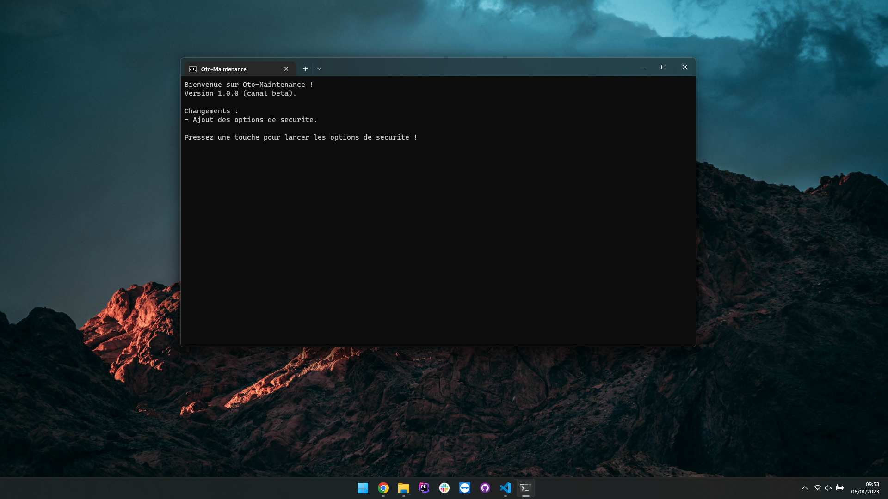
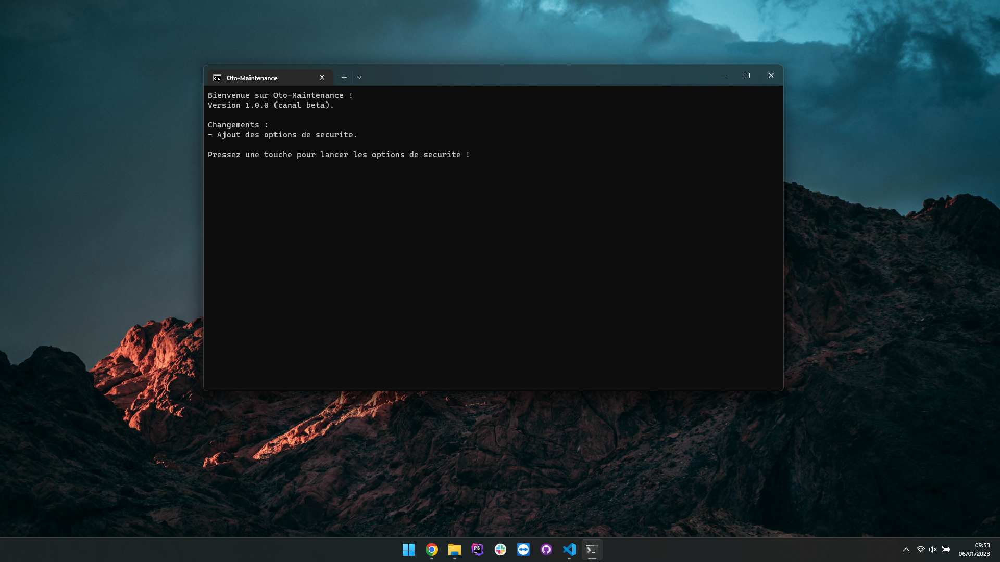

Oto-Maintenance
Logiciel de maintenance Windows avancé
Découvrez Oto-Maintenance, un logiciel de maintenant pour Windows gratuit et open-source !
Découvrir Support
Découvrez Oto-Maintenance, un logiciel de maintenant pour Windows gratuit et open-source !
Découvrir Support